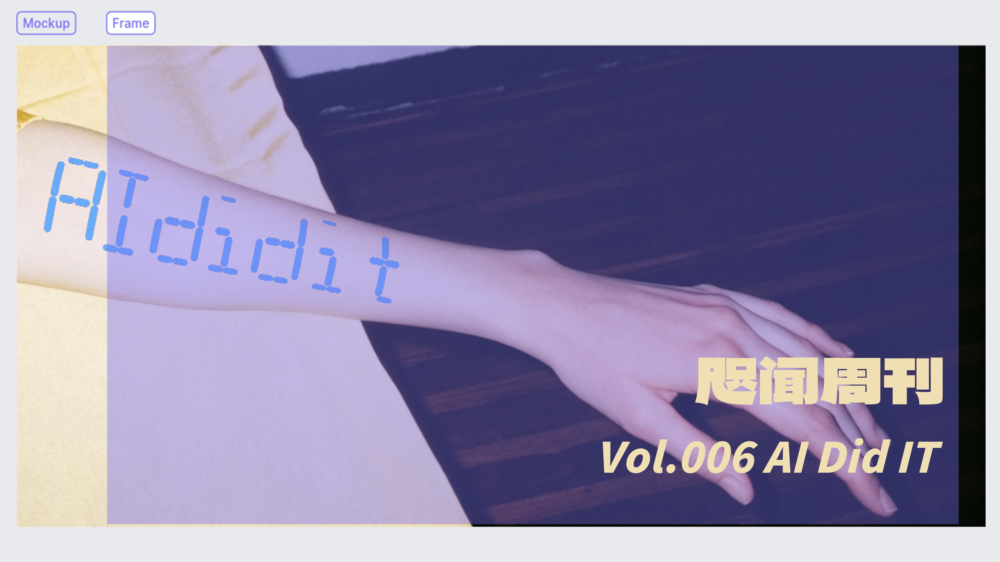
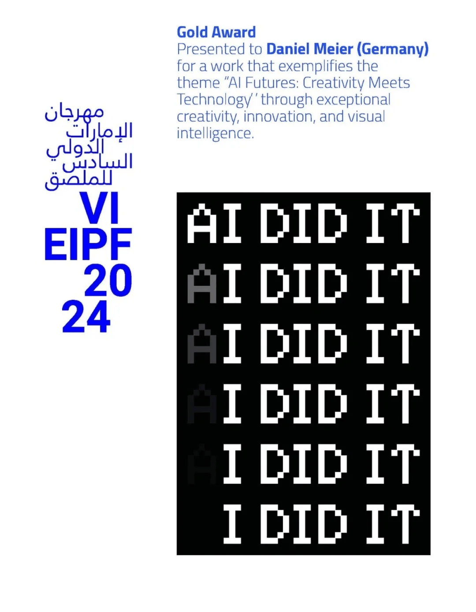
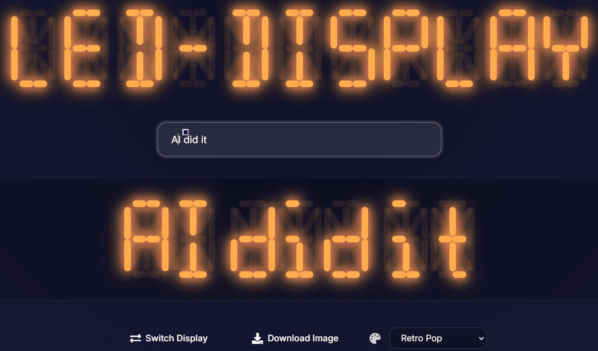
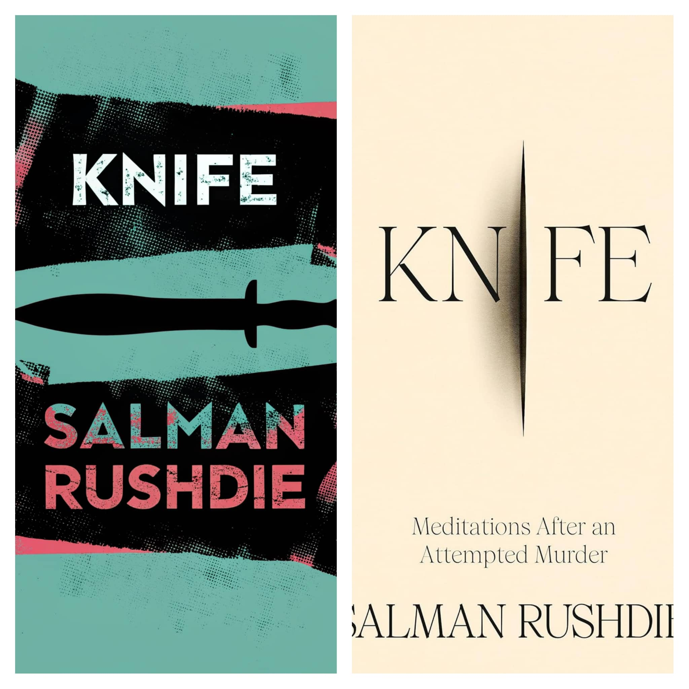
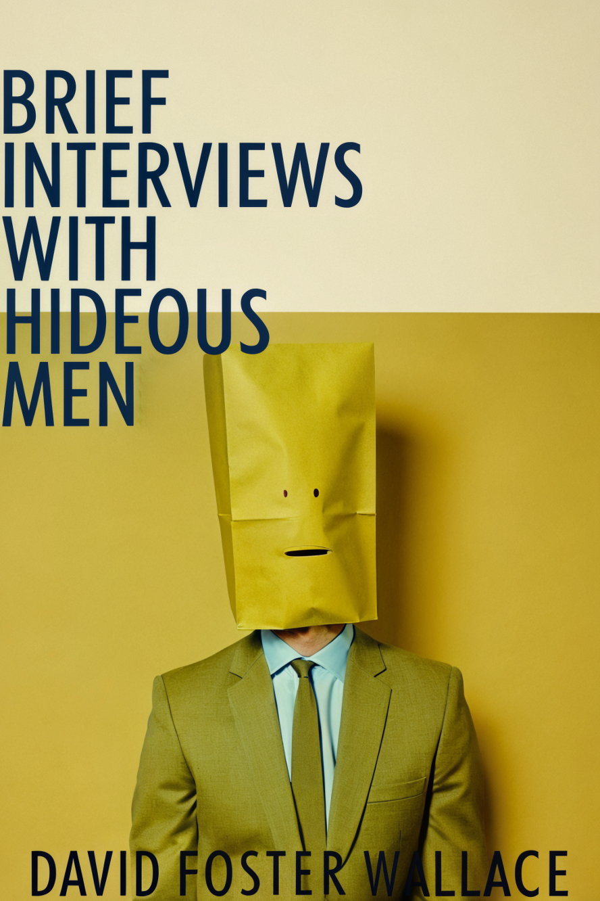

“你这卫衣袖子太长了吧，还有我头搁哪儿呢？”
“先生，我们这是裤子。”
👋 卷首语
刷手机刷到的一个文字游戏，也若有洞察，是第 6 届阿联酋国际海报节（EIPF）金奖作品。

🐎 跑马场
🤔 注意力
我们常常把那些总是试图把文字写得像印刷品一样写字极慢的作家称为完美主义者。尽管这听起来像是对极度专业的赞美，但事实并非如此：一个真正的专业人士会等到校对的时候才开始扮演批评家的角色，这样他就可以一次只专注于做一件事。而校对则需要重点关注写作时用什么词表达更准确，因而校对需要的是更专注的注意力，而写作过程中寻找合适的词语则需要更多的漂浮注意力。
……
对写作而言，从研究到校对，都是环环相扣的。所有小步骤都必须以一种方式联系起来，能够从一项任务无缝地进入另一项任务。但这些步骤又要保持足够的独立性，使我们能够在任何特定的情况下灵活地做需要做的事情。而这也是戴维·艾伦的另一个见解：只有当信任系统，而且知道一切都可以处理好的时候，大脑才会放开，才能专注于手头的任务。
——《卡片笔记写作法》申克·阿伦斯
在动笔前，你应该将资料搜集完整，甚至应该把写作思路清清楚楚地想明白。埃德·麦凯布说：“思考的时候，我就不工作；工作的时候，我从不思考。”还有，“当你准备开始时，你应该处在一种厚积薄发、自然倾泻的状态。”
——《文案之道》李方圆解读
写作的每个阶段需要不同的AI工具（至少是不同的AI窗口），因为每个阶段的思考方式不同，类似于人类写作时立论、资料搜集和写作是分开进行的，以保持文章的逻辑性和连贯性。
——《评论尸的 AI 生产力经验》 之前推荐过这篇文章
多工作业不是人类新掌握的技能，以便适应现代晚期信息社会的需求。更确切地说，它代表了一种倒退。当动物身处野外捕猎区时，普遍存在多任务处理。这种注意力的管理技术是荒野求生的必备技能。
——《倦怠社会》韩炳哲
💻 操作台
⌨️ 段码字

昨天在 B 站看到一个讲解段码字的视频，比较常见的是电梯里的那些数字显示，但也可以显示一些字母，甚至个别汉字。感觉挺有意思的，决定把它作为 AI 编程的一个练手素材。
原本想用 Cursor 的 Claude 3.7 来尝试，但因为用量限制，无法试用，所以最终还是用 Claude 3.5 完成了这个项目。
和上次一样，最大的挑战不是我不会编程，而是如何准确地向 AI 描述我想要的实现效果。比如米字 16 段码的斜线方向，即便截图也很难让 AI 完全理解。最后用 lmarena.ai 的 Claude3.7 试用版，修改了斜线对应的样式，然后手动调整了角度，才达到理想效果。
还有就是多亏网上有人列出了真值表，避免了重复造轮子。
另外，这段据说好用的提示词，确实可以试试：
反思 5-7 个可能的问题来源，将其提炼为 1-2 个最可能的来源，
然后测试验证您的假设，然后再实施实际的代码修复。
项目已经上传至 Github，并且部署在 Vercel 上，欢迎体验。
另，AI 还给这段起了几个标题，比如：
- “原来电梯数字藏着程序员才懂的彩蛋”
- “我教会了AI画斜线，但过程堪比教奶奶用智能手机”
功力不可谓不深厚。
🎨 封面设计（续）
看奇普·基德的TED演讲，说他的老师在第一堂课的一开始，在黑板上画了个苹果，下面写上“Apple”，说，“你要么写这个，要么画这个，二者不能同时出现，要不然就是把观众当弱智。”
我就感觉上次《Knife》的封面不太像样，这明显是“识字卡”类型的“弱智”设计（下图左）。原版封面（下图右）就明显好上不少，有刀不见刀，属于是“白狗身上肿”类型的好设计（这是个什么类型）。

于是陷入一个死胡同，还有什么东西“无刀胜有刀”呢？我联想到“开尔文船波”，但真正画出来才明白这很难和刀痕联系起来。
后来读《奇普·基德的设计世界》发现，封面设计很大程度是“拿来主义”的，会做一些摄影和绘画作品的“采样”（不过要发行肯定需要拿到授权）。比如，上面的原版封面就（好像）是封塔纳作品的翻版。于是，我总结了一套“图像再生”流程：
- 选择（生成）合适的图像，适当裁切后导入 Recraft
- 使用
Fine-tune模式，选择合适的相似度 - 输入很简单的提示词，比如：
Design a book cover for "Knife", by Salman Rushdie.

Recraft “再生”的《Knife》封面着实出乎意料：原图像与“刀”毫无关联，而再生之后却出现了一扇刀形状的门，门中还有一个渺小的人，若有所思，似乎与作品内容产生了联系。
的确，艺术依赖于观者的阐释能力。
📖 小说翻译（续）
上次 提到了“三步法”翻译，我想起之前还看到一个意译提示词，关键点在于不提“翻译”，而是说“用中文重写”。这次来比较一下这两种提示词的翻译效果。
我选取了大卫·福斯特·华莱士的短篇小说《DEATH IS NOT THE END》，“三步法”翻译的提示词和上一次一样，意译提示词是：
这篇题为《DEATH IS NOT THE END》的小说通过极致的细节描写和近乎静止的场景，
探讨了成就、存在与虚无之间的复杂关系。英文人名保持不变，
现在请尊重原意的前提下，保持原有格式不变，**用中文重写下面的内容**。
使用 Deepseek-V3 进行翻译，为了节省篇幅，只取其中一部分进行对比：
原文：
The fifty-six-year-old American poet, a Nobel Laureate, a poet known in American literary circles as ‘the poet’s poet’ or sometimes simply ‘the Poet,’ lay outside on the deck, bare-chested, moderately overweight, in a partially reclined deck chair, in the sun, reading, half supine, moderately but not severely overweight, winner of two National Book Awards, a National Book Critics Circle Award, a Lamont Prize, two grants from the National Endowment for the Arts, a Prix de Rome, a Lannan Foundation Fellowship, a MacDowell Medal, and a Mildred and Harold Strauss Living Award from the American Academy and Institute of Arts and Letters, a president emeritus of PEN, a poet two separate American generations have hailed as the voice of their generation, now fifty-six, lying in an unwet XL Speedo-brand swimsuit in an incrementally reclinable canvas deck chair on the tile deck beside the home’s pool, ... DEATH IS NOT THE END
“三步法”翻译：
这位五十六岁的美国诗人，诺贝尔奖得主，被美国文学界誉为“诗人的诗人”或简称为“诗人”，正躺在甲板上。他赤膊，中等超重，半躺在一张部分倾斜的甲板椅上，沐浴在阳光下。他半仰卧，身材中等但不严重超重。他曾两次获得国家图书奖，一次国家书评人协会奖，一次拉蒙特奖，两次国家艺术基金会资助，一次罗马奖，一次拉南基金会奖学金，一次麦克道威尔奖章，以及美国艺术与文学学院和研究所颁发的米尔德丽德和哈罗德·施特劳斯生活奖。他还是PEN的前主席，两代美国人都称赞他为他们这一代的声音。现在，他五十六岁，穿着未湿的XL Speedo泳衣，躺在一张逐渐倾斜的帆布甲板椅上，位于他家泳池旁的瓷砖甲板上。
“用中文重写”：
这位五十六岁的美国诗人，诺贝尔文学奖得主，在美国文学圈中被称为“诗人的诗人”或有时简称为“诗人”，此刻正躺在屋外的露台上，赤着上身，略微发福，半仰在一张部分可调节的躺椅上，沐浴在阳光下，阅读着。他半仰着，体重适中但不算严重超标，曾两次获得国家图书奖、一次国家书评人协会奖、一次拉蒙特奖、两次国家艺术基金会资助、一次罗马奖、一次兰南基金会奖学金、一次麦克道威尔奖章，以及美国艺术与文学学院颁发的米尔德丽德与哈罗德·斯特劳斯生活奖。他还是笔会的前任主席，两代美国人都曾称他为他们时代的代言人。如今，他五十六岁，穿着一条未湿的XL码Speedo泳裤，躺在家旁泳池瓷砖露台上的一张可调节帆布躺椅上。
我用 Deepseek-R1 和 Claude-3.7-sonnet-thinking 分别测试，都说意译提示词的效果更好。哪怕以我的英语水平，也确实能看出“三步法”译文的生硬之处，比如：
- 两代美国人都称赞他为他们这一代的声音
- 躺在一张逐渐倾斜的帆布甲板椅上，位于他家泳池旁的瓷砖甲板上
另外，虽然翻译效果的好坏有不同的主张，但如果用意译提示词的话，Token 消耗量会实实在在减少，明显是性价比更高的选择。
意译的全文就附在后面了，这篇小说近似于写生，甚至没有出现人名。
📰 报刊亭
💀 死亡并非终结
文：大卫·福斯特·华莱士
译：DeepSeek-V3

这位五十六岁的美国诗人，诺贝尔文学奖得主，在美国文学圈中被称为“诗人的诗人”或有时简称为“诗人”，此刻正躺在屋外的露台上，赤着上身，略微发福，半仰在一张部分可调节的躺椅上，沐浴在阳光下，阅读着。他半仰着，体重适中但不算严重超标，曾两次获得国家图书奖、一次国家书评人协会奖、一次拉蒙特奖、两次国家艺术基金会资助、一次罗马奖、一次兰南基金会奖学金、一次麦克道威尔奖章，以及美国艺术与文学学院颁发的米尔德丽德与哈罗德·斯特劳斯生活奖。他还是笔会的前任主席，两代美国人都曾称他为他们时代的代言人。如今，他五十六岁，穿着一条未湿的 XL 码 Speedo 泳裤，躺在家旁泳池瓷砖露台上的一张可调节帆布躺椅上。这位诗人是最早获得约翰·D.和凯瑟琳·T.麦克阿瑟基金会“天才奖”的十位美国人之一，也是目前仅存的三位获得诺贝尔文学奖的美国作家之一。他身高 5 英尺 8 英寸，体重 181 磅，棕发棕眼，发际线因对各种品牌植发系统的不一致接受与拒绝而参差不齐。他坐着，或躺着——或许更准确地说是“半仰着”——穿着一条黑色 Speedo 泳裤，躺在家旁肾形泳池的瓷砖露台上^1，躺椅的靠背现在调至四档，与露台的马赛克瓷砖呈 35 度角。时间是 1995 年 5 月 15 日上午 10 点 20 分。他是美国文学史上作品被收入选集次数第四多的诗人，躺在一把遮阳伞附近，但并未真正处于伞的阴影下，阅读着《新闻周刊》杂志^2，用他微微隆起的小腹作为杂志的倾斜支撑，脚上穿着人字拖，一只手枕在脑后，另一只手垂在身侧，手指轻抚着露台上昂贵西班牙陶瓷瓷砖的棕褐色花纹，偶尔用湿润的手指翻页。他戴着处方太阳镜，镜片经过化学处理，能根据光线强度按比例变暗。垂下的手腕上戴着一块中等质量和价格的手表，脚上穿着仿橡胶人字拖，双腿交叉，膝盖微微分开。天空无云，随着太阳的升高逐渐变得更加明亮。他用手指蘸的不是唾液或汗水，而是放在躺椅左上角、紧挨着他身体阴影边缘的冰镇玻璃杯上的冷凝水。那个杯子必须移动才能保持在凉爽的阴影中。他漫不经心地用手指沿着玻璃杯的侧面滑下，然后用湿润的手指随意地翻页，偶尔翻动着 1994 年 9 月 19 日那期《新闻周刊》的页面，阅读着关于美国医疗改革的文章和关于美国航空 427 号航班悲剧的报道，阅读着对畅销非虚构作品《热区》和《即将到来的瘟疫》的总结与好评，有时连续翻过几页，快速浏览某些文章和摘要。这位杰出的美国诗人，距离他五十七岁生日还有四个月，曾被《新闻周刊》的主要竞争对手《时代》杂志荒谬地称为“当今最接近真正文学不朽的人物”。他的小腿几乎无毛，遮阳伞的椭圆形阴影微微收紧，人字拖的仿橡胶鞋底两面都有颗粒感，诗人的额头上点缀着汗珠，肤色深而健康，大腿内侧几乎无毛，阴茎在紧身泳裤中紧紧蜷缩，范戴克胡须修剪整齐，铁桌上放着一个烟灰缸，他没有喝他的冰茶，偶尔清清嗓子，时不时在躺椅上微微挪动，用一只脚的大脚趾漫不经心地挠另一只脚的脚背，既没有脱下人字拖，也没有看脚，似乎全神贯注于杂志。蓝色的泳池在他右侧，房子的厚玻璃滑动后门在他斜左侧，在他和泳池之间是一张白色编织铁桌，中央插着一把大遮阳伞，伞的阴影现在不再触及泳池。这位无可争议的成就斐然的诗人，正躺在他家泳池旁的露台上，躺在他的躺椅上，阅读着他的杂志。房子的泳池和露台三面被树木和灌木丛环绕。这些树木和灌木丛多年前就已栽种，密集交织，杂乱无章，其功能与红木隐私围栏或精美的石墙无异。此时正值春季，树木和灌木丛枝叶繁茂，呈现出浓郁的绿色，静止不动，阴影错综复杂，天空完全湛蓝而静止，因此整个被包围的场景——泳池、露台、诗人、躺椅、桌子、树木和房子后立面——都非常宁静、安详，几乎完全无声，只有泳池水泵和排水口的轻柔咕噜声，以及诗人偶尔清嗓或翻动《新闻周刊》杂志的声音——没有鸟鸣，没有远处割草机、树篱修剪机或除草设备的声响，没有头顶的喷气式飞机或来自诗人房子两侧其他住宅泳池的遥远而模糊的声音——只有泳池的呼吸和诗人偶尔的清嗓，完全宁静、安详、封闭，甚至没有一丝微风来搅动树木和灌木丛的叶子，这些无声的、生机勃勃的、环绕的植物，其静止的绿色生动而不可逃避，既不像世界上任何其他事物的外观，也不像它们的暗示^3。